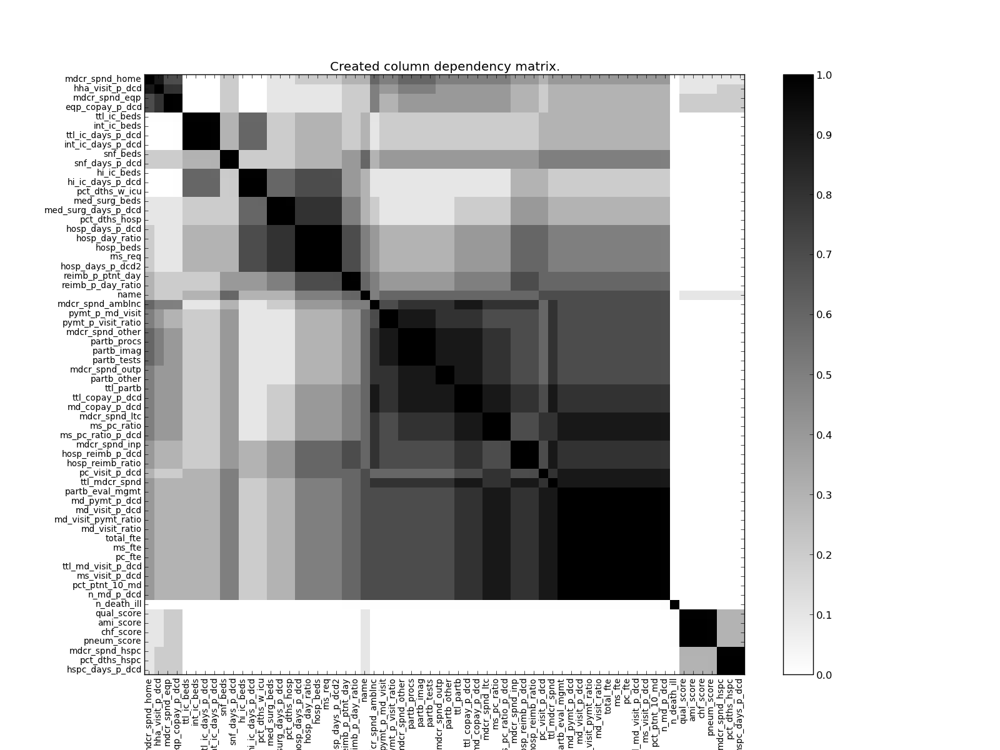

This document provides detailed walkthroughs of analysis on real datasets. The datasets are provided in the source code, under BayesDB/examples.
The Dartmouth Health Atlas dataset is a compilation of information about hospitals, such as quality of care and cost of care.
First, create the btable:
CREATE BTABLE dha FROM dha/dha.csv
Then, analyze the data:
CREATE 20 MODELS FOR dha
ANALYZE dha FOR 500 ITERATIONS
Or, if you want to proceed to the next step immediately, you can import already-generated samples:
IMPORT SAMPLES dha/dha_samples.pkl.gz INTO dha
Now, let’s look at some of the data:
SELECT name, qual_score, ami_score, pymt_p_visit_ratio, ttl_mdcr_spnd, hosp_reimb_ratio,
hosp_reimb_p_dcd, md_copay_p_dcd, ttl_copay_p_dcd
FROM dha_demo LIMIT 10
The above SELECT query is a standard SQL command which lets us view our data:
+--------+-------------------+------------+-----------+--------------------+---------------+------------------+------------------+----------------+-----------------+
| row_id | name | qual_score | ami_score | pymt_p_visit_ratio | ttl_mdcr_spnd | hosp_reimb_ratio | hosp_reimb_p_dcd | md_copay_p_dcd | ttl_copay_p_dcd |
+--------+-------------------+------------+-----------+--------------------+---------------+------------------+------------------+----------------+-----------------+
| 0 | Abilene TX | 79.2 | 81.8 | 0.9 | 39677.0 | 0.8 | 17502.0 | 1911.0 | 2308.0 |
| 1 | Akron OH | 89.1 | 95.7 | 1.0 | 44895.0 | 0.9 | 20966.0 | 2194.0 | 2472.0 |
| 2 | Alameda County CA | 87.1 | 93.5 | 1.2 | 59140.0 | 1.4 | 32049.0 | 2546.0 | 2873.0 |
| 3 | Albany NY | 87.8 | 94.2 | 1.0 | 40775.0 | 0.9 | 19474.0 | 2408.0 | 2697.0 |
| 4 | Albany GA | 81.4 | 86.1 | 0.9 | 39735.0 | 0.9 | 21010.0 | 1680.0 | 2088.0 |
| 5 | Albuquerque NM | 84.8 | 91.4 | 1.0 | 37608.0 | 0.8 | 17125.0 | 1696.0 | 2075.0 |
| 6 | Alexandria LA | 87.3 | 91.4 | 0.8 | 51216.0 | 1.0 | 22494.0 | 2352.0 | 2922.0 |
| 7 | Allentown PA | 87.7 | 91.5 | 1.0 | 47157.0 | 1.0 | 22567.0 | 2557.0 | 2844.0 |
| 8 | Altoona PA | 84.5 | 88.7 | 0.9 | 41063.0 | 0.8 | 18519.0 | 2110.0 | 2411.0 |
| 9 | Amarillo TX | 85.7 | 94.4 | 0.9 | 42301.0 | 0.8 | 18898.0 | 2047.0 | 2495.0 |
+--------+-------------------+------------+-----------+--------------------+---------------+------------------+------------------+----------------+-----------------+
We can see which columns are related:
ESTIMATE DEPENDENCE PROBABILITIES FROM dha_demo
Which generates the following image output:
There’s a lot of uncessary information in the full column matrix, so let’s just look at the 6 columns most related to the qual_score column (quality of care):
ESTIMATE DEPENDENCE PROBABILITIES FROM dha_demo REFERENCING qual_score LIMIT 6
Adding a confidence threshold of 0.9 to this query doesn’t change the results, because we were already very confident:
ESTIMATE DEPENDENCE PROBABILITIES FROM dha_demo REFERENCING qual_score WITH CONFIDENCE 0.9
Let’s see which columns are most related to pymt_p_md_visit (payment per doctor visit):
ESTIMATE DEPENDENCE PROBABILITIES FROM dha_demo REFERENCING pymt_p_md_visit LIMIT 6
Let’s see which hospitals have healthcare quality most similar to Albany, NY:
SELECT name, qual_score, ami_score, pymt_p_visit_ratio, ttl_mdcr_spnd, hosp_reimb_ratio,
hosp_reimb_p_dcd, md_copay_p_dcd, ttl_copay_p_dcd
FROM dha_demo
ORDER BY similarity_to(name='Albany NY', qual_score), ami_score
LIMIT 10
And which hospitals have payments per doctor visit similar to Albany, NY:
SELECT name, qual_score, ami_score, pymt_p_visit_ratio, ttl_mdcr_spnd, hosp_reimb_ratio,
hosp_reimb_p_dcd, md_copay_p_dcd, ttl_copay_p_dcd
FROM dha_demo
ORDER BY similarity_to(name='Albany NY', pymt_p_visit_ratio), ttl_mdcr_spnd
LIMIT 10
Looks like hospitals in the rust belt have the highest payments per doctor visit, but healthcare quality isn’t correlated with payments per visit! In fact, the best hospitals seem to be pretty well scattered geographically.